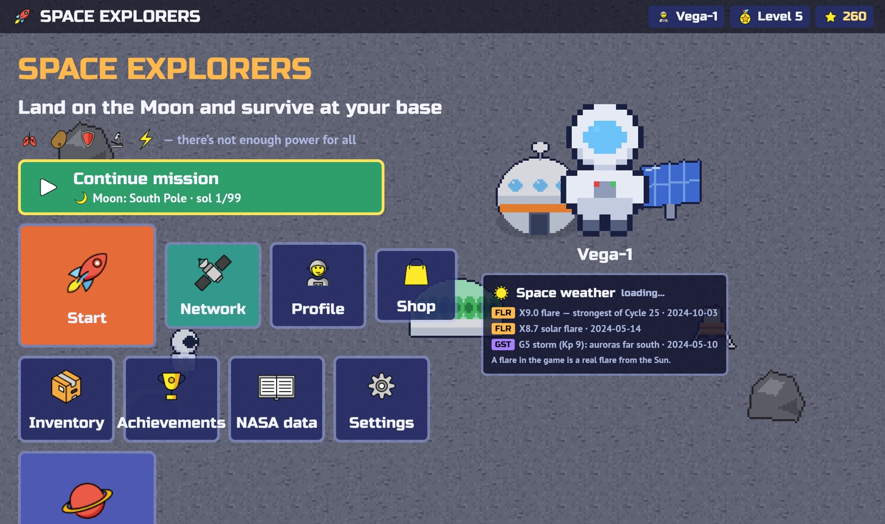
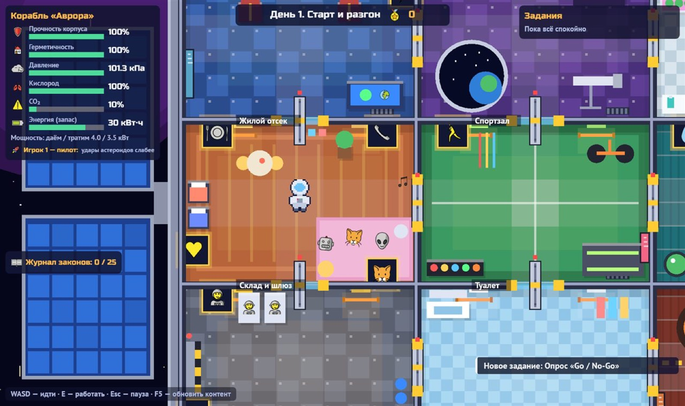
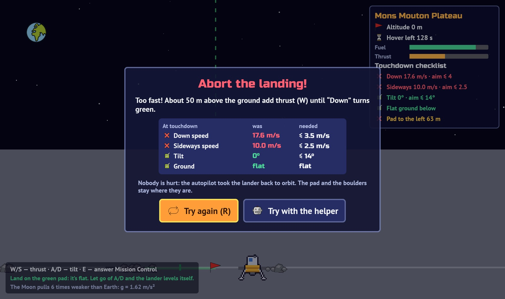
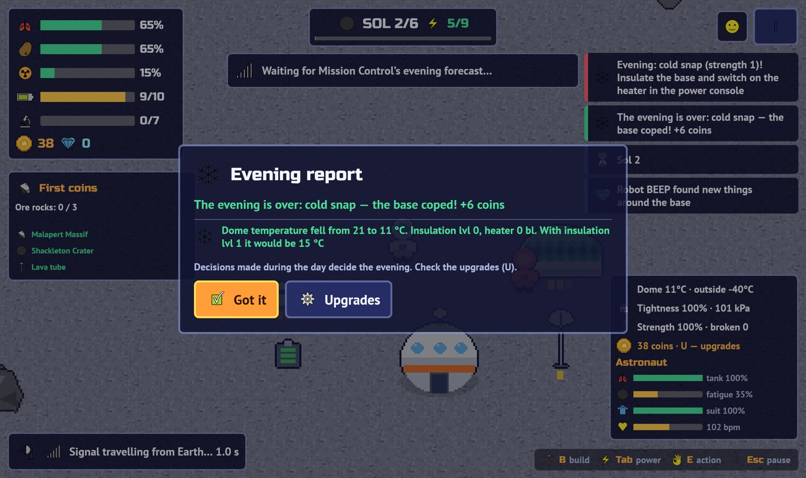
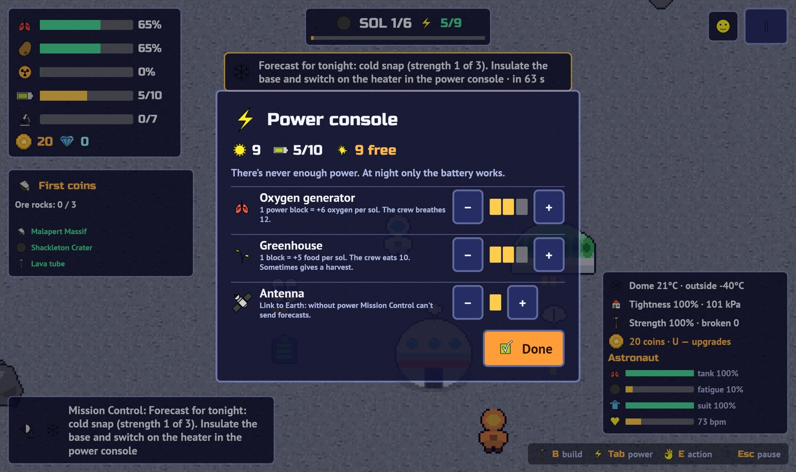
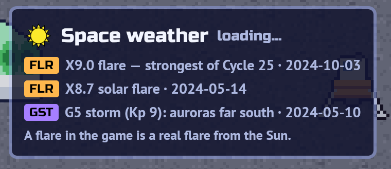

NASA SPACE APPS CHALLENGE 2026
An interactive educational game that builds the skills future astronauts need — where every watt is a choice.
CHALLENGE
Build a Junior Astronaut Mission Trainer
Team MilkyWay Kazakhstan
Nurzhandy · Dinmukhammed · Madiyar · Indira · Yasmina · Samina
Ages 7–12 · Windows, macOS, Linux · works offline · English, Russian, Kazakh (beta)

Real in-game screenshot
THE PROBLEM AND OUR GOAL
Posters and facts: the child never decides anything.
Real mission dashboards are built for adult engineers.
Kids know missions succeed or fail, but not why.
Our goal: make space a hands-on experience that trains real skills — each one through a game mechanic.
| Skill | How the game trains it |
|---|---|
| Concentration | 23 mini-games at the ship’s consoles: wiring, engine burns, finding leaks |
| Logical thinking | Splitting a power budget that never covers oxygen, food and radio at once |
| Fast decisions | An evening threat with a countdown: prepare the base before it hits |
| Coordination | Landing the module by hand: thrust and tilt in lunar gravity |
| Teamwork | Up to 4 players, each with a role: pilot, engineer, researcher, life support |
HOW IT WORKS — STORY MODE + SURVIVAL MODE

Story mode. A 2-day flight (shortened for play; Apollo took about 3). Crew dialogues, physics cards, 23 mini-games and asteroid alerts.

Thrust and tilt in real lunar gravity, 1.62 m/s². A live checklist; on abort, a “was / needed” table shows the mistake.

Survival mode near the lunar south pole: morning forecast, daytime work, evening threat, then a report on why.
THE TRADE-OFF MECHANIC
+6
Oxygen: 1 power block gives +6 a sol, but the crew breathes 12. One block leaves you 6 short.
+5
Food: 1 block gives +5 a sol, but the crew eats 10. One block leaves you 5 short.
0
Antenna unpowered: Mission Control can’t send the forecast. Even when it can, the signal takes 1.3 s.
21→11°
Cold snap: the dome fell from 21 °C to 11 °C. With insulation level 1 it would be 15 °C.

In this mission the Sun gives 9 blocks a sol. The landing site, dust on the panels and night change it — at night only the battery works.
NASA DATA — CORE, NOT DECORATION
| Source | What it does in the game |
|---|---|
| NASA DONKI API | Real flares, storms, particle events and CMEs become the evening threat |
| Curiosity RAD; LND on Chang’e-4 | Daily dose: 0.64 mSv on Mars, 1.369 mSv on the Moon — about 2× |
| NASA Veggie | The greenhouse grows food, like the lettuce astronauts ate on the ISS in 2015 |
| NASA LCROSS | The base is at the south pole, where water ice was confirmed in 2009 |
| NASA Space Communications | Mission Control’s messages arrive after 1.3 s |
| NASA-STD-3001, HRP | Why radiation dose has a limit: 600 mSv in a career |

In-game space-weather panel: real DONKI events with their dates
LIVE
ARCHIVE
Each alert names the real event and its date. Offline, the game uses a built-in archive of real events and labels it ARCHIVE. All sources are listed on the in-game “NASA data” screen.
VALIDITY & SAFETY
Bots played 300 Moon missions per level and style. Bots that followed the forecast won 599 of 600; bots that ignored it lost all 600.
Nobody dies: a bad landing returns to orbit, and a lost base ends in evacuation with a debrief and an “if–then” tip.
“If–then” plans, a calm-breathing action that lowers the astronaut’s heart rate, and crew support moments.
No accounts or personal data: callsigns are picked from a list, online chat is quick phrases only, no real money.
Junior (7–9) and Advanced (10–12) levels. Keyboard, gamepad or touch. Terms like “sol” explained in context.
2 players on one computer, or up to 4 computers on the same Wi-Fi with a room code — on the ship and on the Moon. No internet or server needed.
IMPACT & ACTION PLAN
Why astronauts hide from the Sun, and what a radiation dose is
Power is shared: oxygen, food and contact with Earth compete
Why the base sits at the lunar south pole: water ice
1. Free release on Steam for Windows, macOS and Linux
2. School pilots in classes and clubs, with teacher feedback; Kazakh text checked by native speakers
3. A physical trainer: a capsule with a seat, a console and screens
Team MilkyWay Kazakhstan — from the country of Baikonur, where Gagarin’s flight began · github.com/nurzhandy/nasaspaceapp